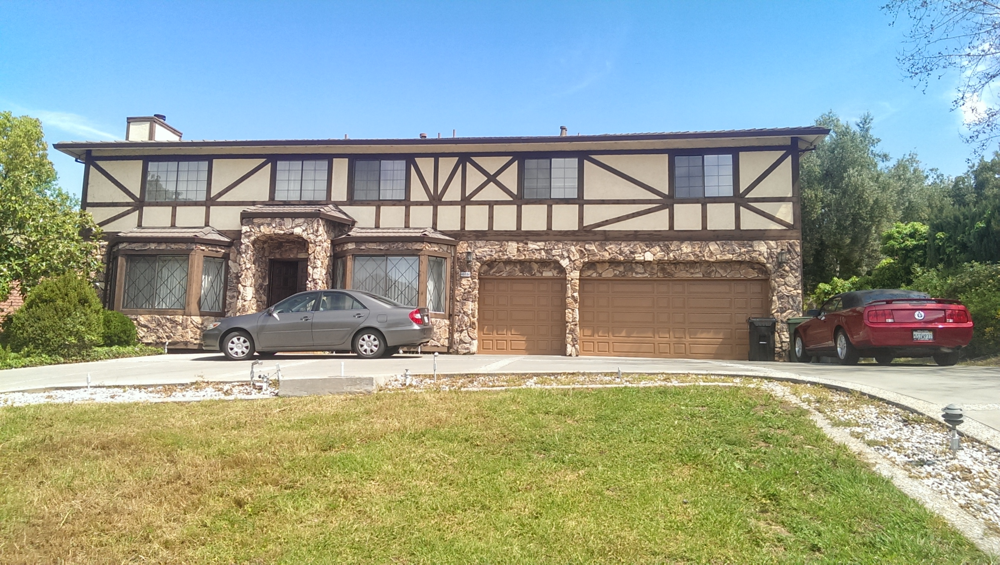
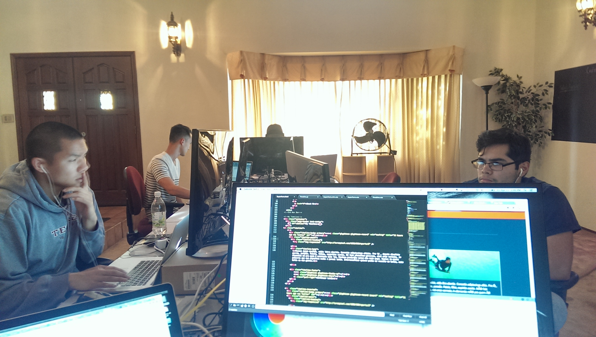

Blog
Memorial Day
May 27, 2014
Memorial Day is, as almost all holidays have become, a day of gathering for barbeques and enjoying the company of your close ones. We should always remember, tho ugh, that for too many of the wives, husbands, and children today simply isn't a day of celebration, but a day for remembrance of those who made a conscious decision to put th eir lives at risk for the greater good. Put aside for a moment all of the political reasons and ramifications of why our servicemen and women are overseas. I was in the Mari nes, and I can tell you we don't care about any of that. What we care about is fighting f or that guy next to us. I can tell you I would have gladly taken a bullet for any one o f my platoon mates and they'll say the same. At the same time, I didn't set out to br owbeat anyone when I decided on the topic. After all, all those who gave their lives s erving the country did so believing that they are making a difference for those loved ones that he or she left behind at home. So on this day let's not be afraid to live our lives to its fullest. Enjoy and play hard and also work hard. Let's return the favor. Let's make an imprint on this world during the short time we are here. Who knows? Maybe one day we can make someone's day just a little bit brighter.
HTML5 Developers Conference
May 23, 2014
At the crack of dawn we boarded the BART headed for San Francisco . Every one of my cohorts were tired from lack of sleep but I think we all shared the sam e sentiment. We were all very excited to be able to attend our very first HTML5 Develop ers Conference.
When we arrived as volunteers, we were each given small tasks t o perform: Bill, Jose and Taylor directed traffic, Peter and I scanned people in as they entered the lobby. To check people in, we were asked to download an app that enabled us to either use our phones' camera to scan the QR code on the attendee's tickets or lo ok him/her up by their names. Cool, but pretty tame stuff, I thought. After all, this WAS the conference for all things web and apps. IN SAN FRANCISCO. As it turns out, perhaps due to past experiences, I had more than a few people who seemed very impressed by the app which I found to be both confusing and amusing.
After about a couple hours of checking people in furiously, we were cut loose! Our HTML5 conference was about to begin!! First thing we did was scan the big board of presentations to see which ones we wanted to attend. The topics ran the gamut from browser security to online gaming.
The first and, in my opinion, the best part of the day was the very first presentation of the day: Famo.us. Famo.us is a developer's tool to build th e most beautiful web apps using a physics engine rather than relying on CSS alone. It is written entirely in JavaScript (JavaScript FTW!), and had just been released to the pu blic just three days ago. The presentation showcased the physics engine and it was by far the most exciting and beautiful things I had seen in a while. I came out of it insp ired that this has to be something that I have to include in my repertoire.
After lunch, we had decided that it would be a good idea to go down to where the vendors were to checkout the swag. What was intended to be a goodies hunt, turned out to be the most exciting part of the day. The booths were occupied by bot h tech industry giants like IBM, GE, and Sony and startups like Ludei, and CouchBase. T he most exciting part was that out 20 or so companies being represented there, all but a couple were all looking for developers! In fact, IBM had 1000 positions that needed to be filled. That was NOT a typo. 1000 jobs! Not company wide, not including all the various d epartments. Just 1000 developers. It's one thing to hear from people who are "in the know " about the job market. It's quite another to actually hear it from the companies themselves. Suffices to say that it was a well-needed confirmation that I'm doing the right thing. What a way to wrap up an amazing day.
How to Set Up a MEAN Stack Project
May 20, 2014
On my last post, I very briefly went over my experiences with the MEAN stack and a little bit of the why it was gaining popularity. Today I decided to take the more practical route to show how to set up a MEAN stack project from the ground up. As you will see, most of the work has been done already and all you have to do is to enter just a couple of command line prompts. The process is relatively painless and I will take you through the steps here.
The very first step is going to be installing Node. You can do this by going to the NodeJS website and hitting install. Pretty simple, right?
Once that's installed, the next thing you are going to do is open up your terminal and type:
npm install -g yo
If you get an "EACCESS" error, that just means you have to type in 'sudo' in front of npm and then type in your machine's password to gain access. Keep in mind, in the terminal, you won't see anything happen when you type your password. It threw me off in the beginning, too. You definitely are not alone. What that last command did was install a scaffolding tool called Yeoman that does all of the heavy lifting for you.
Once that's done installing, and you will know when it's done when your command prompt comes back, you will install the scaffolding of your app by typing in the command prompt:
npm install -g generator-meanstack
See how simple that is? Yeoman will now install and organize all the necessary files for you and the only thing left to do is just type:
yo meanstack
to create your very own web app using the MEAN stack. To launch your new app in your local browser, type:
grunt
in to the terminal and go to localhost:3000 to check out the app! There you have it! If you followed along, this probably was the easiest thing you did all day. Now fill it in with some content and enjoy!
My Experience with NodeJS

May 17, 2014
For about the past week and a half, we have been learning the MEAN stack,
so I'm going to discuss a little bit about my experiences dealing with just one small,
but pretty major part of the MEAN stack that is NodeJS.
First off, for those who don't know what the MEAN stack is, it is an abbreviation describing
the four technologies that make up the "stack" or a structure of programming languages. It
consists of:
MongoDB - A NoSQL database that uses JSON documents to represent data
Express.js - node.js web application framework
Angular.js - front-end web application framework
Node.js - event-driven server-side Javascript environment that runs on Google's V8 engine.
Now, if you haven't noticed already, it's pretty clear why the MEAN stack is gaining
popularity among developers. The entire stack is written in Javascript. This means that
everything is lightening fast since none of the effort goes into translating between
different languages. Another main reason is that the heart of the stack, Node.js, working in
tandem with Express.js, is very lightweight and fast. It uses callback functions to listen
within an event loop for a request to come in, all the while executing other commands.
It isn't without it's shortcomings, however. Well, it isn't so much the issue with the
language, as much as it is about lack of relevant documentation and usage. After all, node.js
hasn't even hit version 1.0 yet. Trying to learn the most cutting edge technology does have
its drawbacks by virtue of it being so new and shiny. When it works, it is a thing of beauty.
But, when it decides it no longer wants to play nice with you, don't be surprised if you have
a hard time finding an answer for it.
But this shouldn't discourage anyone from trying to learn it. Just look at it this way, the
sooner you start learning and figuring out how node.js works, the better you will be
prepared. Ruby on Rails may be the darling right now, but the newborn node.js is growing up
fast and already vying for its share of the attention. Don't say I didn't warn you.
Motivation
May 14, 2014
"Decide in your heart of hearts what really excites and challenges you and start moving your life in that direction. Every decision you make from what you eat to wh at you do with your time tonight turns you into who you are tomorrow and the day after t hat. Look at who you want to be and start sculpting yourself into that person. You may not get exactly where you thought you'd be, but you will be doing things that suit you in a profession you believe in. Don't let life randomly kick you into the adult you don't want to become." - Col. Chris Hadfield Cmdr. Exp. 35 ISS
I guess it would be hard for me to complain about the opportunity I've been given by
being here at Coding House. And this definitely isn't one. What I do want to talk about
tonight, though, is motivation.
It has always been a weakness of mine (yes, I am fully aware that this blog post is gonna be
out there for my potential employers to see) to be motivated. Like so many others, in the
beginning when one is full of hope and dreams, I am excited and rearing to go. But it seems
for me I lose the momentum somewhere along the way. So I end up looking for additional
motivators. I look at some of my friends who don't seem to have the same problem and feel
like I'm missing something. But maybe, just maybe, there isn't.
Everyone goes through the same things in life. Everyone has their struggles and tribulations.
I know there are people out there just like me. So this post is for all of you out there.
1. Self-doubt is natural, but don't let it overwhelm you. Everyone has weaknesses but don't
let your weakness define you. Successful people don't dwell in the past. They only think
about the present and the near future because as much as we would all want to change the
past, no one has that ability. So why bother?
2. One thing I definitely need improvement on is asking questions. No one has all the
answers, and neither do you. Asking questions doesn't mean you are stupid, it just means that
you don't have the answers but you are in search of more knowledge.
3. For the love of god, stop comparing yourself with others. It is quite possibly the most
asinine and least efficient thing you can possibly do. There will always be people better
than you at any given thing at any given moment.
So I don't know if you have already noticed or not, but this post was just as much for me as
it was for whomever out there who needs it. This started from the quote I read that is now the
header of my post. Writing about this definitely is something you can try yourself. I know it
has helped me greatly. Now it's time to get back to work!!
It's Already Been One Month?!
May 5, 2014
Wow it has been too long since I've visited my blog. It is definitely a weird feeling
looking back only three weeks ago, the first week seemed like an eternity. Now I am
overwhelmed by the breakneck speed at which the minutes seem to be flying.
Yesterday, the entire Coding House family went out to Half Moon Bay about an hour's wor
th of drive west from Fremont. In a month's time, all of us have become such close membe
rs of what I'll call a very diverse family. Taylor from Shelton, Washington is adjus
ting quite well to the fact that he is a minority for the first time in his life. The
non-caucasian caucus, which consist of three Asians and Jose(who I have no clue on w
hom he identifies himself with), tend to pick on him a little bit due to the fact he is w
hite and is from a small town that no one has heard of. But then again, with five guys l
iving in a house, no one is safe. Jose from Lubbock, Texas, is slowly coming out of his
shell. I think he's closest to the way I am around a new group of people. He is turni
ng out to be quite a comedian. Bill and Peter have quickly become the front runners in
the class. They seem to be grasping the subject matter faster than the rest of us. I
wish I could be that way but it seems I am a little bit slow on the uptake. I just need to work a little bit harder, but I can't help but feel that I don't
know much, but I've always had a very high threshold for my comfort level. But, I digress. Sunday Fun day was such a blast. It was my very first time on a paddle board and
I was very shaky to say the least(my aquaphobia didn't help) but I survived which didn't
involve staying dry and dare I say, had quite a bit of fun.
After a grabbing a quick lunch at Nick's favorite sandwich shop, we took the scenic rou
te winding through the woods. Of course, Nick had the bright idea of recording yet again
of our interpretation of Hall and Oates' You Make My Dreams, a capella no less because we
didn't have any cell signal. With each day that passes by, one thing is becoming very c
lear - the lesson we are learning isn't just about how to make a web page work, but it
is learning to overcome those things that which make us uncomfortable. The biggest o
ne of them all for me is going to be being comfortable with the fact that I will be putt
ing myself and my body of work out there to be judged while not being as perfect as I
would like to be. This will, by far, be the biggest hurdle I will have to overcome in ord
er to, in the words of Darryl Hall, "make my dream come true."
It's Only Been One Week?!
April 13, 2014
My first week at Coding House is coming to an end, and it's definitely been a shock to the system. Very similar to the way I felt when I first entered boot camp. The overwhelming feeling of being out of place that filled my mind didn’t really leave much room for anything else. But as the days passed, seeing the familiar faces day after day started to put my mind at ease. Being part of such small (and which I am sure also will soon be a tight-knit) group, it was daunting for me to let my guard down. Soon I realized, though, that not only is it beneficial but necessary for me to be successful here and when I enter the workforce. It seems the very first lesson I have learned isn't about HTML or JavaScript, it is about being self-sufficient but being humble enough to know when to ask for help.
Motivation
April 11, 2014
Day 5 of Coding House and I am frantic!! Need to finish my website by 5:30 PM!! You may be wondering why I am wasting time blogging while I can be working on the website... Well, my blog IS the website. Learning so much every single day but can't seem to figure out why I embed a damn picture!!
Motivation

April 9, 2014
Day 4 had come to an end and I feel as though I've been here for 4 weeks... The surprise of amount of knowledge I've been able to absorb is only surpassed by the amount of camaraderie I've come to enjoy with everyone here. Oh, that and how much fatter I've gotten... #CodingHouse rocks.
Charlie!!
April 9, 2014
Meet our unofficial mascot Charlie. If he's not running around, he's in this position. Impossible to get a good shot... http://instagram.com/p/mIJRA5kyqS